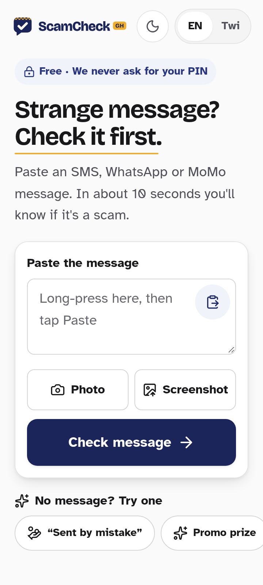
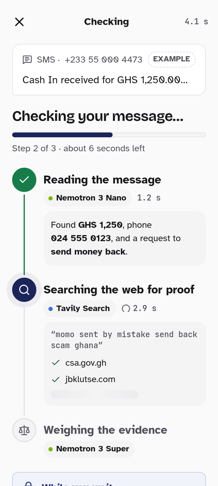
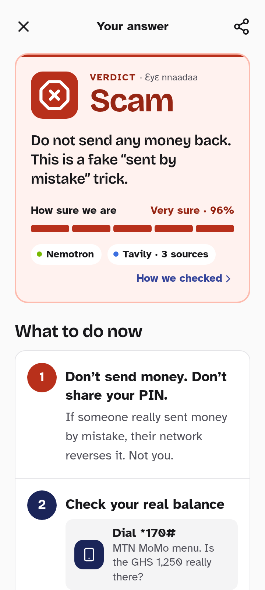
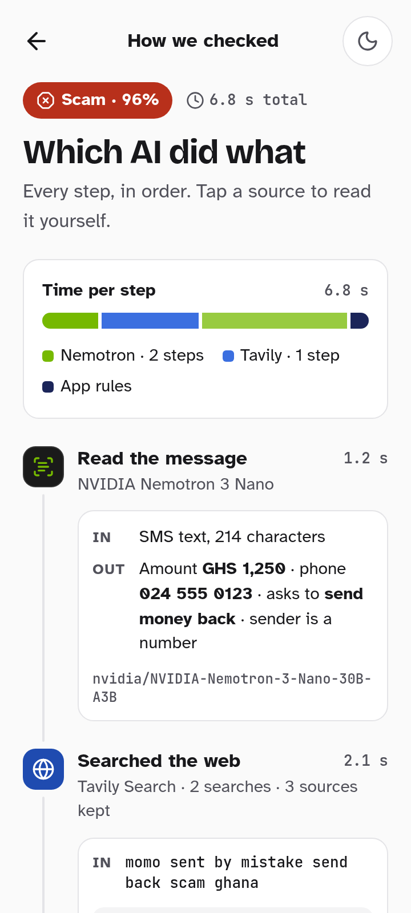
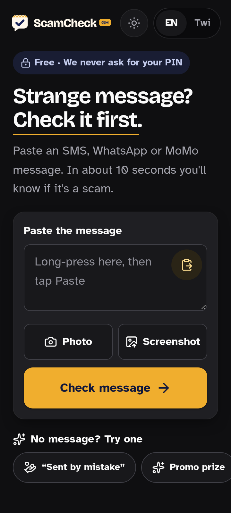
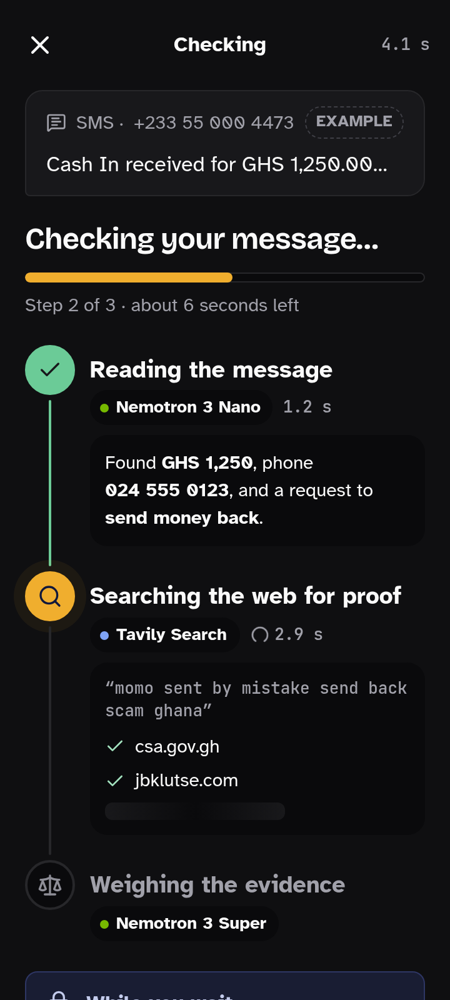
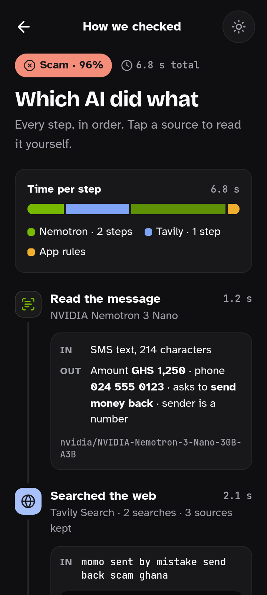

Check before
you send.
A warm, plain-spoken scam checker for Ghana’s mobile-money users. NVIDIA Nemotron reads the message, Tavily finds the proof, and you get a clear answer with what to do now.
Palette
#1B2559
#F0AE2E
#FAFAFA
#0F0F11
#B8301B
#A85605
#167D4A
AA, both modes
Type
Bricolage Grotesque
Display · 800 / 700 · warm, characterful headings
Atkinson Hyperlegible
Body · 17–19 px · built for low vision: 0 vs O, 1 vs l
JetBrains Mono · 1.2 s
Model IDs and latency only
Design principles
- 1Input first. Paste box above the fold; one-tap examples for the instant aha.
- 2Never colour alone. Shape + icon + word + colour on every verdict.
- 3Readable by all. 17–19 px body, short sentences, 48 px+ taps, AA contrast.
- 4Open AI. Every model and tool named, timed, and cited.
- 5Safe actions. Official numbers from a checked list, never generated.
Modes · neutral zinc, brand as accent only
Light · follows system
#FAFAFA
#FFFFFF
#F4F4F5
#E4E4E7
Dark · follows system
#0F0F11
#18181B
#1F1F23
#27272A
Both follow prefers-color-scheme. The sun/moon toggle sets data-theme on <html> and is remembered.




Dark mode · follows the phone’s setting, or the toggle



Scam
Stop. Don’t send.
Suspicious
Be careful. Hwɛ yie.
Looks OK
Still, never share your PIN.